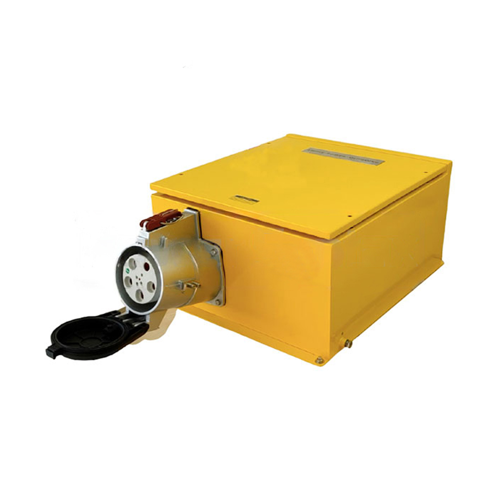

Materiais Elétricos STRAHL — Desde 1986
BEM/4406
Ficha Técnica de Produto
Tomada de Sobrepor 400A · 3P+T · Alta Corrente
Linha Mining Block® · Série Alta Corrente · Alumínio Fundido · Contatos Banhados a Prata
IP67
400A
IEC 309-2
EN 60309-2
DIN VDE 0623

Posição Horária · Cor
6H
380–415V · Vermelho
Índice de Proteção
6
À prova
de poeira
de poeira
7
Imersão
temporária
temporária
10
Impacto
20,0 J (IK10)
20,0 J (IK10)
Normas e Conformidade
IEC 309-2
EN 60309-2
DIN VDE 0623
NBR ISO 9001
Pino Piloto Duplo: Na conexão é o último contato estabelecido; na desconexão é o primeiro a ser interrompido — garantindo desligamento automático via contator.
Especificações Elétricas
| Tensão de Utilização | 400V (até 1000Vcc) |
| Corrente Nominal | 400A |
| Nº de Pólos | 3P + T (4 pinos) |
| Posição Pino Terra | 6H |
| Frequência | 50 – 60 Hz |
| Temperatura de Trabalho | −40°C a +100°C |
| Resistência de Isolamento | > 500 MOhm |
| CTI do Inserto | > 600 |
Materiais e Cabos
| Carcaça | Alumínio Fundido |
| Contatos / Buchas | Cobre Eletrolítico Banhado a Prata |
| Sistema de Conexão | Pinos com Anéis de Compressão |
| Bitola do Cabo Principal | 185 – 240 mm² · 1kV (Classe 1+2) |
| Bitola do Cabo Piloto | 1,5 – 4,0 mm² · 1kV (Classe 1+2) |
| Tipo de Montagem | Suporte de Parede (Sobrepor) |
Resistência ao Fio Incandescente (GWIT)
| Norma de Referência | IEC 60695-2-13 |
| Temperatura GWIT | 775°C / 960°C |
Diferenciais Técnicos
Proteção Completa IP67
À prova de poeira e imersão temporária em água. Confiabilidade total em condições ambientais adversas.
Proteção Permanente Contra Contato
Protege contra choque elétrico por toque inadvertido e previne falhas por penetração de partículas estranhas.
Inversão de Polos Impossível
Arquitetura interna que impede a inversão de polos, garantindo conexões corretas e em conformidade normativa.
Buchas Banhadas a Prata + Anel de Compressão
Mantêm contato permanente entre pino e bucha, evitando aquecimento. Alta resistência à abrasão e oxidação.
Sensor de Temperatura Integrado
Monitora temperatura no miolo e aciona desligamento automático em caso de sobrecarga prolongada.
Sensor de Corrente + Porta de Segurança
Monitora falha de isolação e exige porta fechada para energizar o sistema. Manopla com dispositivo para cadeado.